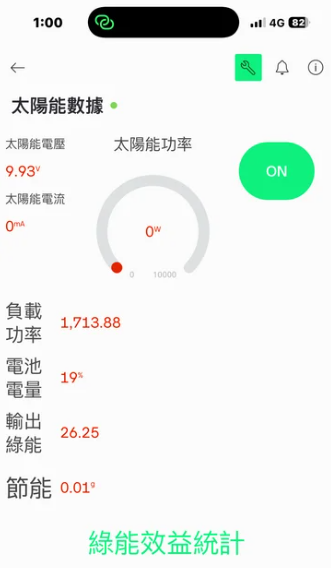

背景設定：一群大學生合租一個老舊獨立透天厝。夏天一到，室內像烤箱，但大家都不敢開冷氣，因為上個月的電費帳單飆漲，為了「誰冷氣吹比較久」差點吵翻天。加上老房子配電差，只要有人同時開吹風機和微波爐，馬上就會「啪」一聲大跳電。
在「模式操作」頁面右上角，我們特別設計了「▶ 自動展示」功能。點擊後，系統會將時間軸壓縮，在短時間內帶您流暢地經歷一天 24 小時的日夜交替與氣候變化，並自動呈現以下所有模式的觸發時機。
在白天時只要偵測到電池電量已達90%時，系統會啟動此機制，將多餘的太陽能電力供應至負載設備。
當白天且電池電量於20-89%的區間，太陽能發電優先用於電池儲能，以確保儲能系統在白天能累積足夠的電力，供夜間或緊急狀況使用。
透過白天所儲存於電池中的電能供應負載設備運作，驗證系統在無太陽光發電情況下的供電能力與能源調度效果。
在晚上且降雨機率大於70%時，系統能夠以極低功耗的運作方式，將剩餘的存電保留給通訊與基本設備。
設定20%(9.6V)為低電量保護門檻，防止電池過放，而導致系統故障。
在面對突發性的市電中斷時，無須靠硬體，只需透過手機開啟 Blynk 雲端物聯網 App，就可一鍵介入系統，瞬間點亮急難照明或啟動關鍵的備用家電。
本系統的「減省電費顯示」頁面搭載了真實的微積分物理引擎。您可以透過切換至「模式操作」頁面拉動搖桿，來即時測試數據的變化：
除了自動切換模式，本系統更具備專業能源管理系統 (EMS) 的長期數據分析能力。以下為系統上線滿一個月後，後台為用戶產出的三大指標：

ℹ️ 系統說明與免責聲明： 本數據看板為即時動態模擬。系統將依據您在模式操作頁面設定的『時間』與『降雨機率』，搭配本專題設定的硬體參數，即時推算出在該條件下的預估發電功率與減省電費成效。完全基於物理公式運算，非過往歷史假資料。
20 W (展示模型放大1:81 = 1620W)
85 %
NT$ 3.8 / 度 (kWh)
以家庭單日平均耗電 5 度 (kWh) 為基準
單日發電量 × 30天 × NT$3.8
NT$ 1,250
▼ 較去年同期省下 45%98.5%
保護機制運作良好，無過放損耗3 次
本月已啟動 2次陰雨預警, 1次緊急用電* 日照強度 I = max(0, sin(時間角度)) × (1 - 降雨衰減係數)